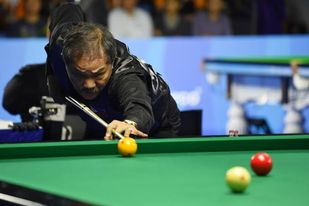

Efren Manalang Reyes
OLD PLH (born August 26, 1954), popularly known by the nicknames "Bata" (Tagalog for 'Kid') and "The Magician", is a Filipino professional pool player, who is widely regarded as the greatest pool player of all time, and especially famed for his skill at the challenging one-pocket discipline. In 2003, he was inducted into the Billiard Congress of America's Hall of Fame.
Tyler Styler
Is a North American professional player ranked number 10 in the world, who boasts 25 wins and 15 losses.
Lechner Maximilian
This billiard professional is Austrian and is currently ranked number 9, with a performance record that includes 23 wins and 16 losses. In the snooker world he is known as Mad Max. He was the WPA junior 9-ball world champion.
Ralf Souquet
He is a German player who enjoys great expertise with his right hand, which has allowed him to achieve a total of 23 wins and 16 losses. He is known in the billiard environment as "The Kaiser".
David Alcaide:
Spain is also represented with this billiard player ranked number 7. Throughout his performance he has achieved 82 victories and 56 defeats.